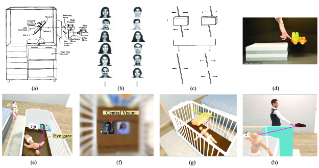

Introduction
The phenomenal development in AI and reinforcement learning, accompanied with the advancement in robotics has recently led to much research in the field of robotics development. And this field of robotics is mainly driven by studying infant psychology and by observing the child behavioral development. To build such human like robot, many researchers are exploring the option of training the model in more realistic environment. This paper presents such an environment, which provides varied human experiences which are ideal for a baby, and provides experiences for infant, right from when it is a fetus to when it is 12-month-old.
Model Design
In order to build an adult like robot, we will require massive amount of data to train the model for multiple tasks. So, a better approach is to focus on building a childlike model and focus on training it bit by bit. The environment to train our model is an improvised version of earlier research. The previous approaches to develop such model had some issues, such as:
- It targeted single skill and ended up making overfitted model.
- The training data used was refined and lacked diverse data.
- The model was mainly trained using reward system.

To overcome these limitations this paper presents SEDRO, where the learning agent is trained by interacting with other characters. And the model is designed by focusing on the early stage of human development when not much verbal interaction takes place. Therefore, it is easier to design this training environment and with SEDRO the models progress can be evaluated by comparing it with human infants.
Strong Points
The environment proposed by the authors is very similar to a real environment of human infant developement. Also, the strong point of this paper is that the model is trained without using any external reward system. I agree with the author’s idea of training the model by creating an interactive environment, where the agent can interact with the caregiver and objects and learns gradually.
Weak Points
Though the idea of the setup sounds interesting, but the paper does not provide enough supporting data for training the model. In order to train the agent like a real baby, different scenarios and a huge amount of datapoints are required. The authors can include more information regarding the different recorded scenarios and how that will be maintained for different SEDRO versions used for different age group of agents.